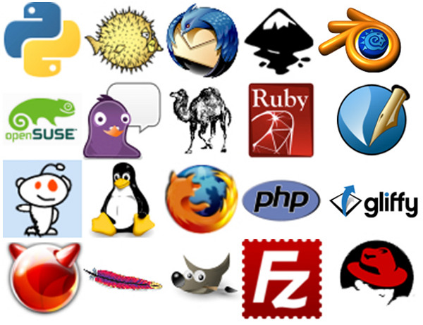

Welcome to FOSS, IIIT Allahabad

Free and Open Source Software, abbreviated as FOSS, is an ideology more than it is a technical term. It is a vision which aims to bring the advancements in the Software field to the whole humanity. We, the members of FOSS wing of the IIIT-A Technical Society are committed to working for this noble cause.
The FOSS wing develops open-source software for the institute and conducts events such as workshops to provide guidance for the use and development of free and open-source software.The source code for all the projects under the wing is openly shared and anyone is encouraged to voluntarily provide suggestions and improvements
Upcoming FOSS Workshops
Sample Workshop on Nothing Really
Date :
30th February 2016
Time :
9 AM - 12 PM
Venue :
Admin Auditorium
Expected Pre-requisites :
Basic knowledge of Git, GitHub